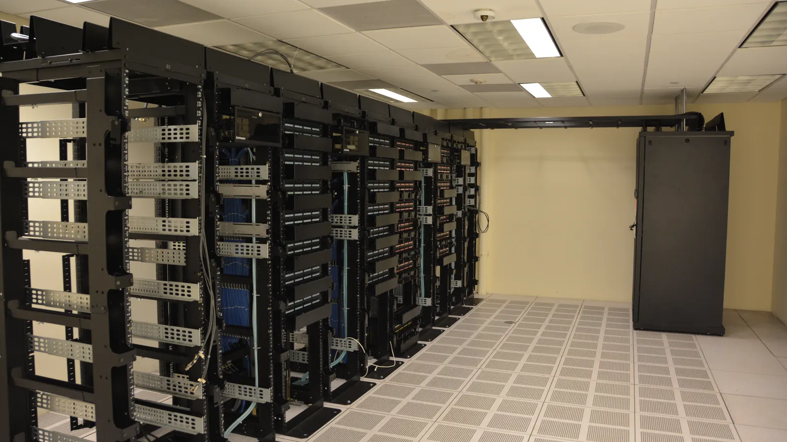
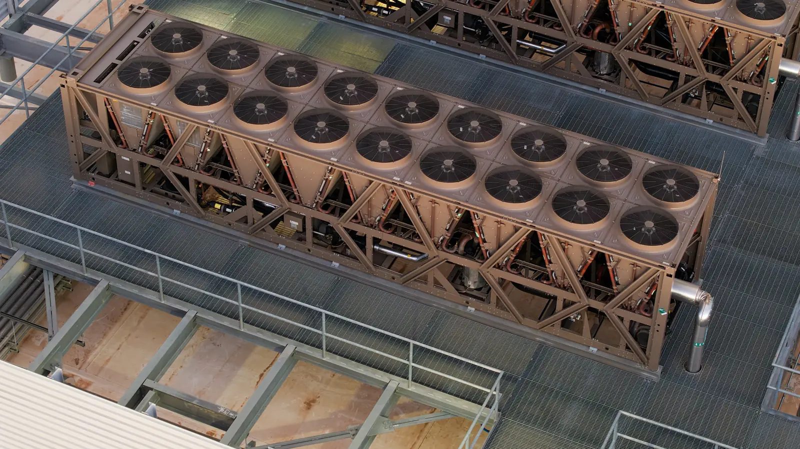

One question to a chatbot uses very little. Billions of questions, ever-larger models and the machines built to run them use a lot. This report separates the two scales, with sourced figures throughout.
0.3 Wh
for a typical text prompt, about 2 minutes of an LED bulb
485 TWh
used by the world's data centres in 2025, more than France
× 2
by 2030 according to the IEA, three quarters of it due to AI
23 %
of Ireland's electricity already goes to data centres
01Key points
What to remember
Six findings, each linked to its source (the small numbers point to the list at the bottom of the page). The button copies the sentence with its reference, ready to quote.
1
A text question to an AI assistant uses about 0.2 to 0.4 Wh, roughly one to two minutes of an LED light bulb. 456
2
A long reasoning answer costs about ten times more than a simple one; a five-second video, several thousand times more. 68
3
The world's data centres used about 485 TWh in 2025, 1.5% of global electricity, a little more than all of France. AI-focused sites already account for a third. 13
4
The IEA expects demand to double by 2030, with AI driving three quarters of the increase. Data-centre emissions would rise by 70%. 12
5
The impact is highly local: data centres take 23% of Ireland's electricity and more than a quarter of Virginia's, against 2% in France. 31314
6
Microsoft's emissions rose 25% in one year, and so did those of Google's supply chain: building data centres and making chips weighs more and more. 1516
02Reading the numbers
Before reading any figure
Two questions avoid most misreadings: in what unit? and what is being counted?
Units, from one prompt to the planet
Electrical energy is measured in watt-hours (Wh). Each step below is a thousand times the previous one.
1 Whwatt-houra 10 W LED bulb on for 6 minutesthe scale of one prompt
1 kWha thousand Wh≈ 10 litres of water brought to the boil, or 6 km in an electric carone person's use over a year
1 MWha thousand kWh≈ 3 months of a French household's electricity
1 GWha million kWh≈ 220 French households for a yeartraining one model
1 TWha billion kWh≈ 220,000 households for a year; France uses ≈ 450 TWhthe data centres of a country or the world
Scope changes everything
The same request can “weigh” two to three times more depending on what is included. Google showed this with Gemini in 2025: 4
?+ hardware manufacturing, training, network, your device: not counted
Rule of thumb: a figure with no scope or date compares to nothing. Company figures are not verified by third parties.
03One request
One request: how much?
Recent measurements agree for a simple text question: between 0.2 and 0.4 Wh, far below the 3 Wh often quoted in 2023. But it all depends on what you ask: answer length, reasoning and above all images or video change the order of magnitude.
Energy of one request by type. Logarithmic scale: each tick is ten times the previous one. Right: equivalent lighting time of a 10 W LED bulb.
Your use over a year
Set your habits: the calculation uses the values from the chart above.
3,5 kWh per year
38 litres of water brought to the boil
20 km in an electric car
1,6 kg of CO₂ on the world-average grid
Share from video0 %
Assumptions: 0.3 Wh per question, 3.9 Wh per long reasoning answer, 0.63 Wh per image, 944 Wh per video; 0.1 kWh to boil one litre of water; 17 kWh per 100 km; 450 g of CO₂ per kWh. Training, hardware manufacturing and your own device are not counted.
Takeaway
For one person, text weighs little. What drives the bill up: video, images in bulk and reasoning used by default. And collectively, the multiplication by hundreds of millions of users.
04Training
Training a model
Before it can answer, a model must be trained: weeks of computation on tens of thousands of chips. It is a one-off cost, but it climbs with each generation, and few companies publish it.
Electricity used to train three well-known models, and the number of French households it would power for a year (≈ 4.5 MWh per household).
100–150 MW
The power drawn by a major training run today, about a mid-sized city. It roughly doubles every year. 12
4–16 GW
What a single frontier training run could require in 2030 according to Epoch AI: 4 to 16 nuclear reactors. 12
20,400 t
of CO₂e and 281,000 m³ of water for Mistral Large 2: training plus 18 months of use, the only full life-cycle analysis published. 9

A data centre: thousands of servers running day and night. This is where models are trained, then answer.Photo : Carl Lender / Wikimedia Commons, CC BY 2.0
05Electricity
Data centres: one more country on the grid
Data centres are not only for AI: they also host the cloud, video and email. But AI drives their growth: +17% consumption in 2025, and +50% for AI-focused sites. 13
AI-focused sitesOther uses
2025measured
155330485 TWh
2030central projection
465480945 TWh
All of France ≈ 450Japan ≈ 940
Electricity used by the world's data centres, in TWh. The 2030 projection is the IEA's central scenario. 13
A concentrated impact
Globally, 1.5% looks modest. But data centres cluster near major cables and strong grids: locally, they weigh as much as an entire industry.
Share of electricity used by data centres, 2024-2025.
And in France?
≈ 300
data centres in operation in 2026
≈ 10 TWh
per year, 2% of national consumption
15–20 TWh
expected in 2030, 23 to 28 TWh in 2035
18 GW
of grid capacity reserved in May 2026, against 5 GW at the end of 2024
Source: RTE. 13 With electricity over 90% low-carbon (nuclear, hydro, renewables), France is a sought-after location for hosting AI.
06Carbon
Carbon: it all depends on the socket
A kilowatt-hour does not emit the same amount of CO₂ depending on how it is produced. The same 0.3 Wh request can emit forty times more depending on where the server is.
French electricity≈ 25 g per kWh
0.008 g
World average≈ 450 g per kWh
0.14 g
Coal power plant≈ 1,000 g per kWh
0.3 g
CO₂ emitted by a 0.3 Wh request depending on the electricity used (orders of magnitude).
≈ 150 Mt
of CO₂ a year from data-centre electricity, about 0.5% of global emissions. 13
+ 70 %
in emissions by 2030 according to the IEA: in the US, 60% of data-centre electricity would come from gas; in China, half of AI sites' power from coal. 2
180 GW
of gas-fired plants planned in the US to power data centres (August 2026). 2
Google and Microsoft say they match 100% of their consumption with renewable purchases: this is an annual balance, not a guarantee that their servers run on clean power at every moment. Anthropic, xAI and DeepSeek publish no detailed measurement.
07Water
Water: from a few drops to a bottle
Servers heat up; many data centres cool them by evaporating water. Add the water used by the power plants supplying them, and by chip manufacturing. Depending on what is added up, one request “uses” anything from a few drops to half a bottle.
Mistral Large 2, one answerfull life cycle, manufacturing included 9
45 ml
100-word email, GPT-4including power-plant water 17
519 ml
Water attributed to one request, depending on what is counted. Same logarithmic scale: from cooling alone to the full life cycle, the gap is 1 to 2,000.
222 bn L
of cooling water used by the world's data centres in 2025; nearly 650 billion by 2030 at the current pace. 18
78 %
of its freshwater use is what Google says it “replenished” in 2025 through local projects: 7.7 billion gallons (29 billion litres). 15

Cooling towers: this is where water evaporates to carry away the servers' heat.Photo : Rsparks3 / Wikimedia Commons, CC0
08Hardware
Hardware: the impact you don't see
Before using any electricity, an AI chip already has a cost: metal mining, manufacturing in Taiwan or Korea, shipping, building the facility. Then, after a few years, it becomes waste.
Minemetals and rare earths
Makechips, servers, buildings
Usetrain and answer
Discardevery 3 to 5 years
≈ 15 %
of Mistral Large 2's emissions come from hardware manufacturing and the rest of the life cycle; 85.5% from training and use. Mistral notes that no reliable GPU life-cycle study exists yet. 9
2.5 Mt
of e-waste a year by 2030 from generative AI, against 2,600 t in 2023, in the most intensive scenario. Circular practices could avoid 16 to 86% of it. 19
+ 25 %
in Google's supply-chain emissions in 2025, mainly from manufacturing AI hardware. 15
09What to do
More efficient does not mean less
The progress is real: Google cut the energy of a Gemini request 33-fold in one year, and Microsoft Research thinks it can still fall 8 to 20 times. Yet total data-centre consumption grows 17% a year. When a service gets cheaper, people use it more: the rebound effect. 461
You
A search engine for a simple fact.
A fast model for simple tasks; “reasoning” mode only when it really helps.
One precise prompt rather than ten attempts; no endlessly regenerated videos.
A small local model on your computer for everyday use.
Figures checked on 26 November 2026. Carbon-intensity orders of magnitude and equivalences (households, bulbs, kettles) are Génération-IA.fr calculations based on these sources.
1IEA, Energy and AI (2025) and its update Key Questions on Energy and AI (April 2026). iea.org
2IEA, World Energy Outlook 2026, 19 November 2026 (data-centre figures as reported by AFP). iea.org
3H. Ritchie, “How much energy do data centers and AI use?”, Our World in Data, July 2026. ourworldindata.org
4Google, “Measuring the environmental impact of delivering AI at Google scale”, August 2025 (arXiv 2508.15734). arxiv.org
5S. Altman (OpenAI), “The Gentle Singularity”, June 2025. blog.samaltman.com
6F. Oviedo et al. (Microsoft Research), “Energy use of AI inference, efficiency pathways, and test-time scaling”, Joule, April 2026. doi.org
7Epoch AI, “How much energy does ChatGPT use?”, February 2025. epoch.ai
8J. O'Donnell and C. Crownhart, “We did the math on AI's energy footprint”, MIT Technology Review, May 2025. technologyreview.com
9Mistral AI, with Carbone 4 and ADEME, life-cycle analysis of Mistral Large 2, July 2025. mistral.ai
10D. Patterson et al. (Google, Berkeley), “Carbon Emissions and Large Neural Network Training”, 2021. arxiv.org
11Meta, Llama 3.1 405B model card, July 2024. huggingface.co
12Epoch AI and EPRI, “Power demands of frontier AI training”, August 2025. epoch.ai
13RTE (French grid operator), “Les data centers en chiffres clés”, updated 1 June 2026. rte-france.com
14CSO (Ireland), Data Centres Metered Electricity Consumption 2025, July 2026. cso.ie
15Google, 2026 Environmental Report (2025 data), 30 June 2026. blog.google
16Microsoft, 2026 Environmental Sustainability Report (fiscal 2025), as reported by ESG Dive, July 2026. esgdive.com
17The Washington Post with the University of California, Riverside (S. Ren), September 2024. washingtonpost.com
 Google 2025
Google 2025 Microsoft fiscal 2025
Microsoft fiscal 2025